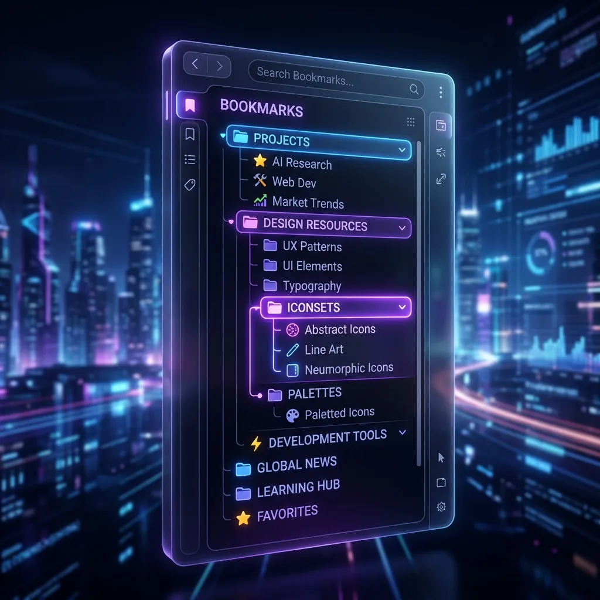

ブラウザのタブとブックマークの管理は、タブグループの活用、ショートカットでの一括保存、ブックマークのフォルダ整理を組み合わせると効率的です。この記事では、今すぐ使える具体的な機能と操作手順をまとめました。
タブの効率的な管理方法
タブグループで用途別に分類する
タブを右クリックして「タブをグループに追加」→「新しいグループ」を選択すると、名前と色をつけてグループ化できます。
- 「仕事」「リサーチ」「プライベート」のように用途別にグループを作成
- グループ名をクリックすると折りたたみ/展開ができ、タブバーをすっきり整理
- グループごとに色分けされるため、視覚的に目的のタブを素早く発見可能
ただし、Chrome標準のタブグループには注意点があります。Chromeを終了するとグループが解除される場合があり、永続的な管理には向きません。この課題を解決するのが、ブックマーク保存型のタブ管理拡張機能です。
タブの固定（ピン留め）
よく使うタブを右クリックして「タブを固定」を選択すると、小さく表示されて左端に固定されます。Gmail、Slack、Google カレンダーなど常時使うサービスを固定しておくと、誤って閉じるのを防げます。
キーボードショートカットを活用する
タブ操作を高速化する主要ショートカット：
- Ctrl + T — 新しいタブを開く
- Ctrl + W — 現在のタブを閉じる
- Ctrl + Shift + T — 閉じたタブを復元する（最大25個まで遡れる）
- Ctrl + Tab — 次のタブに切り替え
- Ctrl + 1〜8 — 指定番号のタブに直接ジャンプ
- Ctrl + 9 — 最後のタブに移動
一括ブックマークで全タブを保存
Ctrl + Shift + D（Macは Cmd + Shift + D）を押すと、開いているすべてのタブを新しいフォルダに一括ブックマーク保存できます。フォルダ名を入力して保存すれば、いつでもまとめて復元可能です。
ブックマークの整理方法
ブックマークマネージャーの活用
右上の「⫶」メニュー → 「ブックマークとリスト」 → 「ブックマーク マネージャー」を開くか、Ctrl + Shift + O（Macは Cmd + Shift + O）で直接アクセスできます。
- ドラッグ＆ドロップでフォルダの移動や並び替えが可能
- 右クリックで名前の変更・削除・フォルダ作成ができる
- 上部の検索バーでブックマーク内をキーワード検索
フォルダ分けのコツ
効果的なフォルダ構成の例：
- 「仕事」 → クライアント別、プロジェクト別にサブフォルダ
- 「趣味」 → カテゴリ（音楽、映画、料理 等）で分類
- 「あとで読む」 → 一時的な保存場所。定期的に整理
- 「学習」 → プログラミング、語学、資格など分野別
フォルダは3階層以内に収めるのがベストです。深すぎると探すのに時間がかかり、管理が破綻します。
タブとブックマークの管理を「次のレベル」へ
Chrome標準機能の限界
Chrome標準のタブグループとブックマークマネージャーは基本的な管理には十分ですが、以下の限界があります：
- タブグループはChrome終了時に消えることがある
- ブックマーク検索はタイトルとURLの完全一致のみ（内容検索不可）
- タブとブックマークが別々に管理され、シームレスな連携がない
- 「タブを閉じたけどブックマークし忘れた」が頻発する
拡張機能による解決
こうした課題を解決するのが、LB TAB Layersなどのタブ管理拡張機能です。
LB TAB Layers は、タブの管理とブックマーク整理を統合した Chrome 拡張機能です。主な特徴：
- ブックマーク保存 — タブを閉じると自動的にChromeブックマークとして永続保存。拡張機能を削除してもデータが残る
- レイヤーグループ — 「クライアントA」「リサーチ」「経理」のようにフォルダ型でタブを整理。ワンクリックで一括開閉
- AI検索 — 自然言語でタブやブックマークを横断検索。「先週見た料理のレシピ」のような曖昧な検索にも対応
- サイドパネル対応 — ブラウザ右側のサイドパネルから、メインページを離れずにタブ管理が可能
- 40種類以上のテーマ — ダークモードやカラーバリエーションで好みの見た目にカスタマイズ
まとめ：タブとブックマーク管理の実践チェックリスト
- ✅ タブグループを作成して用途別に色分け・折りたたみ
- ✅ Ctrl + Shift + T で誤閉じタブを即座に復元
- ✅ Ctrl + Shift + D で全タブを一括ブックマーク
- ✅ タブの固定で常用サービスを保護
- ✅ ブックマークフォルダを3階層以内で体系的に整理
- ✅ LB TAB Layers でタブ保存を自動化＋AI検索で効率化
タブとブックマークは、適切に管理すれば年間180時間以上の時間を節約できます。まずは今日からショートカットとタブグループを習慣にし、さらに効率を求めるなら拡張機能を導入してみてください。